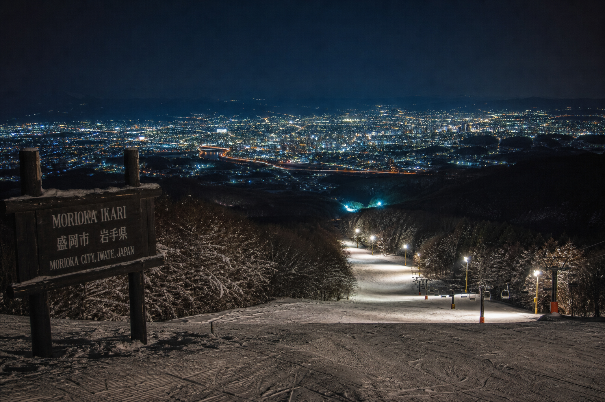
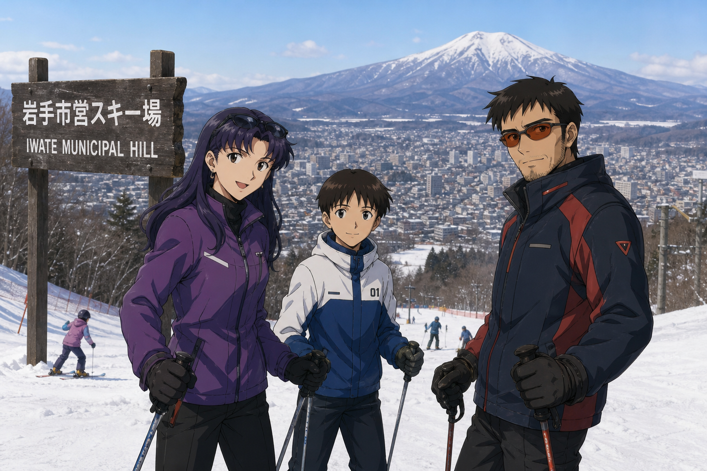

緩斜面3コース × 鳥海山ビュー
最大斜度21°・平均10〜15°前後の緩斜面主体——初心者・家族・市内小中学校のスキー授業に最適。ゲレンデから鳥海山と月山を望む、新庄市営のコンパクトゲレンデ（全3コース・リフト1基）。
コース・ビューを見る更新 12/25 9:00
リフト
運行中
リフト1基 · 待ち時間ほぼなし
コース
3コース
最大800m · 最大21°
ナイター
21:00まで
平日12:00〜 · 土日祝9:00〜
ビュー
鳥海山・月山
ゲレンデ全域から眺望
新庄市民の魅力
最大斜度21°・平均10〜15°前後の緩斜面主体——初心者・家族・市内小中学校のスキー授業に最適。ゲレンデから鳥海山と月山を望む、新庄市営のコンパクトゲレンデ（全3コース・リフト1基）。
コース・ビューを見るそり遊び無料のちびっこゲレンデ、中学生以下リフト無料——家族連れの来場ハードルを極限まで下げ、親世代のチケットとレンタルで付帯収益を創出する公共施設モデル。
ファミリーゾーン案内Municipal Pricing
公共スポーツインフラとしての使命を反映した戦略的低価格——大人日券¥2,000、高校生¥1,000、シニア¥1,500。11回券¥3,300で地元リピーターを支え、広域からの新規来場と併走する料金設計（LP案）。
Adult
大人日券 ¥2,000
Kids
中学生以下 無料
On-site Rental
スキーセット・スノーボードセット各¥3,000、ウェア¥3,000——新幹線で来場する広域旅行者も、現地で一式を揃えてすぐ滑走開始。電話予約不要（窓口貸出）。
手ぶら来場×新幹線ターミナル立地の組み合わせで、仙台圏・首都圏からの摩擦の少ないウィンターデイトリップを実現（LP戦略案）。
レンタル案内Night Skiing
照明完備のナイター営業（〜21:00）——新幹線で夕方到着した旅行者の初滑りや、地元住民の仕事帰り・放課後滑走を支える。レストハウスで休憩と軽食。
シーズン中 TEL 0233-25-3915（スキー場事務所）。公式情報は新庄市スポーツ協会サイトでも確認できます。
ナイター・営業時間

Family First
緩斜面3コース、ちびっこゲレンデ（そり無料）、週末ジュニアスキーレッスン——ウィンタースポーツの教育窓口として機能する市民ゲレンデ。ジャンプ台・ワイドBOXなどスノーアイテムも充実。
Evening Trip
東京・仙台から山形新幹線で新庄へ——到着後すぐ車15分でゲレンデ。2時間券¥1,800で夕方から21時まで滑走する、広域日帰りナイトトリップの動線（LP案）。
SHINKANSEN · NIGHT SKI01
山形新幹線で新庄
東京〜新庄 最短約3時間15分。ゆめりあ併設の終点駅
02
駅前レンタカー
新庄駅前店で車を借り、ゲレンデまで約15分
03
2時間券でナイター
17:00以降のナイター帯を2時間券で効率滑走
04
レストハウス
滑走後はゲレンデ直結の休憩・軽食
05
新庄市内へ
最上公園・温泉・宿泊——最上観光と組み合わせ
Access
JR新庄駅から車で約15分 · 駐車場130台（無料）
TEL 0233-25-3915（シーズン中） · 0233-22-0681（シーズン外・体育館）